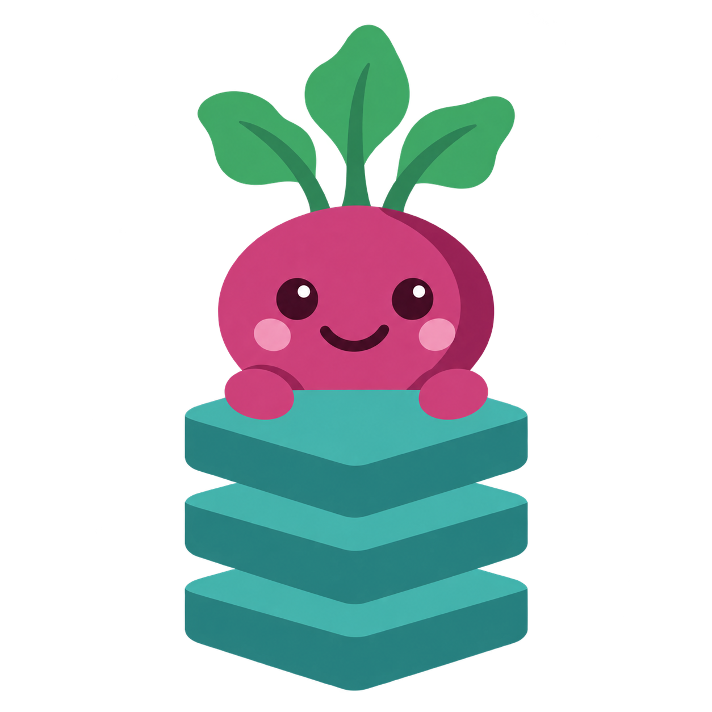

<!doctype html>
<html lang="en">
<meta charset="utf-8">
<meta name="viewport" content="width=1200">
<title>btravstack brand card</title>
<link rel="stylesheet" href="../packages/theme/src/fonts.css">
<style>
/* Hallmark · component: social card · theme: Beetroot Stack
 * Static artwork; interactive states do not apply.
 * Pre-emit critique: P5 H5 E4 S5 R5 V4
 */
:root { --paper:#0f1014; --ink:#f3f1f5; --muted:#b9b4c0; --rule:#323039; --accent:#e875ab; --display:'Geist',sans-serif; --mono:'JetBrains Mono',monospace; }
* { box-sizing:border-box; }
body { margin:0; width:1200px; height:630px; background:var(--paper); color:var(--ink); font-family:var(--display); }
main { position:relative; height:100%; }
p { margin:0; color:var(--muted); }
.website-card { padding:54px 64px; overflow:hidden; }
.website-wordmark { position:relative; z-index:1; font-size:38px; font-weight:800; letter-spacing:-1.8px; }
.website-wordmark span { color:var(--accent); }
.website-card h1 { position:relative; z-index:1; margin:56px 0 23px; max-width:700px; font-size:88px; font-weight:800; line-height:1.02; letter-spacing:-4.4px; }
.website-card h1 span { color:var(--accent); }
.website-card p { position:relative; z-index:1; font-size:24px; line-height:1.45; }
.website-mascot { position:absolute; width:610px; height:610px; top:10px; right:-48px; }
.website-address { position:absolute; left:64px; bottom:44px; font:18px var(--mono); color:var(--muted); }
:root { --unthrown:#65c9bd; --entity:#e3ad57; --di:#80aff1; --temporal-contract:#a1aaff; --amqp-contract:#ff944d; --tools:#92bad1; --theme:#e875ab; }
.project-card h1 { font-size:80px; letter-spacing:-4px; max-width:650px; }
.project-card .website-wordmark { color:var(--project-accent, var(--accent)); }
.project-card h1 span { color:var(--project-accent, var(--accent)); }
.project-card .project-mascot { width:540px; height:540px; top:50px; right:0; }
.project-card p { max-width:650px; }
.unthrown { --project-accent:var(--unthrown); }
.entity { --project-accent:var(--entity); }
.di { --project-accent:var(--di); }
.temporal-contract { --project-accent:var(--temporal-contract); }
.amqp-contract { --project-accent:var(--amqp-contract); }
.tools { --project-accent:var(--tools); }
.theme { --project-accent:var(--theme); }
</style>
<template id="website-card">
<div class="website-wordmark"><span>btrav</span>stack</div>
<h1>A backend<br>that fits<br><span>together.</span></h1>
<p>A TypeScript framework.<br>Independent libraries. One coherent stack.</p>

<div class="website-address">btravstack.github.io</div>
</template>
<main></main>
<script>
const cards = {
  framework: ['btravstack', 'Your app,<br><span>composed.</span>', 'A TypeScript backend framework.<br>Your process, taken care of.', 'btravstack.github.io/btravstack'],
  unthrown: ['unthrown', 'Errors you<br>can <span>handle.</span>', 'Errors as values, for TypeScript.<br>Failures you can see in the type.', 'btravstack.github.io/unthrown'],
  entity: ['entity', 'Your domain.<br>Declared<br><span>once.</span>', 'Domain entities for TypeScript.<br>Validated at the boundary.', 'btravstack.github.io/btravstack/entity'],
  di: ['di', 'Your wiring.<br>Proven<br><span>before boot.</span>', 'Typed dependency injection.<br>Compose your graph with confidence.', 'btravstack.github.io/btravstack/reference/di'],
  'temporal-contract': ['temporal-contract', 'Durable<br>workflows.<br><span>One contract.</span>', 'Typed Temporal workflows.<br>From client to worker.', 'btravstack.github.io/temporal-contract'],
  'amqp-contract': ['amqp-contract', 'Messages.<br>One shared<br><span>contract.</span>', 'Typed AMQP messaging.<br>From publisher to consumer.', 'btravstack.github.io/amqp-contract'],
  tools: ['btravstack tools', 'One shared<br><span>toolchain.</span>', 'Consistent builds and releases.<br>Conventions that travel with your project.', 'github.com/btravstack/tools'],
  theme: ['btravstack theme', 'One family.<br>One visual<br><span>language.</span>', 'A shared VitePress theme.<br>Every project, unmistakably related.', 'btravstack.github.io'],
};
const key = new URLSearchParams(location.search).get('project') || 'btravstack';
if (key === 'btravstack') {
  const main = document.querySelector('main');
  main.className = 'website-card';
  main.replaceChildren(document.querySelector('#website-card').content.cloneNode(true));
} else {
  const [name, headline, description, url] = cards[key];
  const main = document.querySelector('main');
  main.className = `website-card project-card ${key}`;
  main.replaceChildren(document.querySelector('#website-card').content.cloneNode(true));
  document.querySelector('.website-wordmark').textContent = name;
  document.querySelector('h1').innerHTML = headline;
  document.querySelector('p').innerHTML = description;
  document.querySelector('.website-address').textContent = url;
  const mascot = document.querySelector('.website-mascot');
  if (key !== 'framework') {
    mascot.src = `../apps/website/public/logos/${key}-dark.svg`;
    mascot.classList.add('project-mascot');
  }
  mascot.alt = `${name} beetroot mascot`;
}
</script>
</html>
